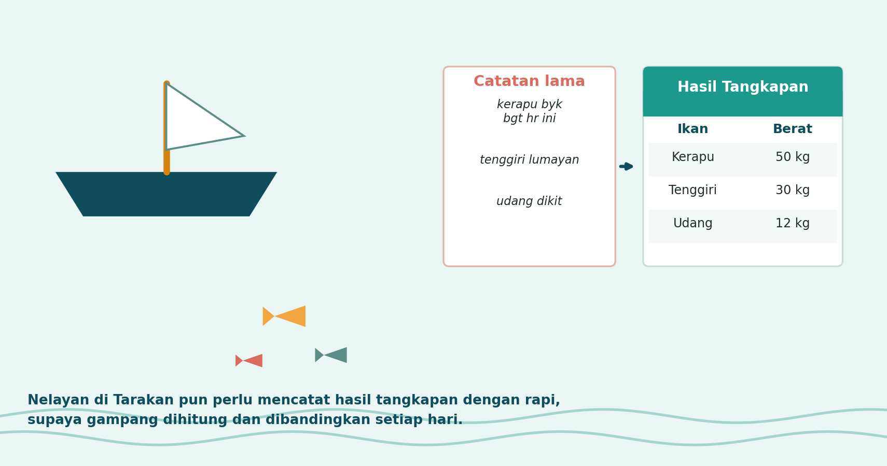
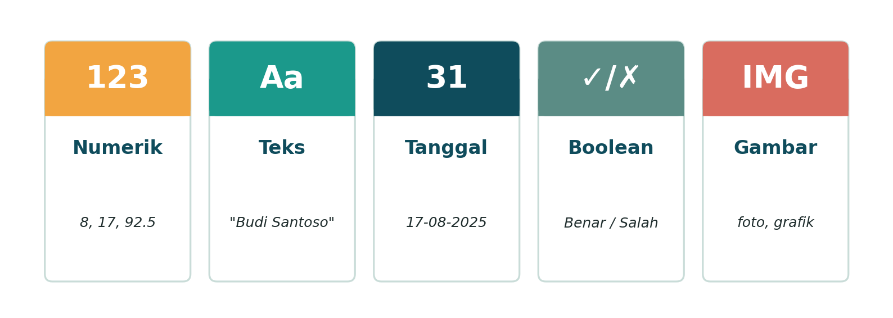
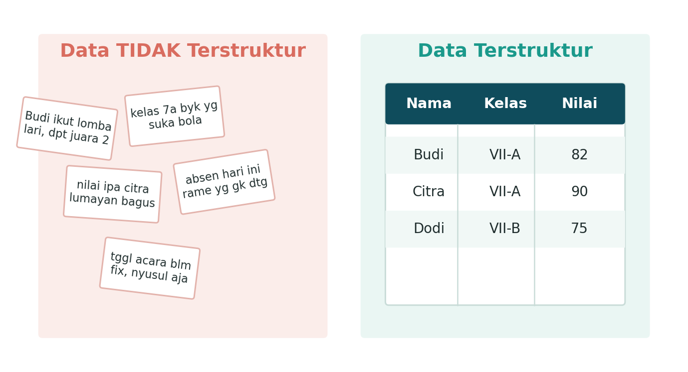
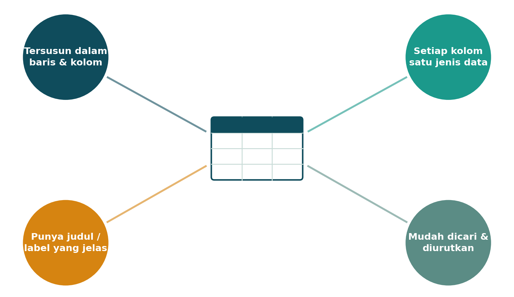
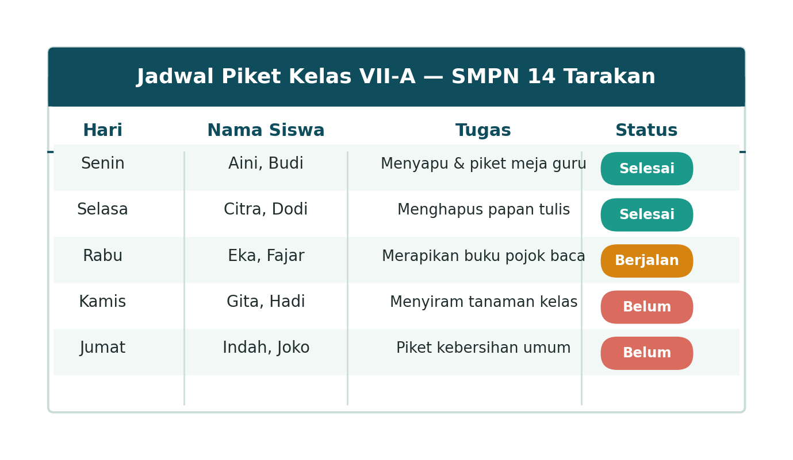

Yuk, Mulai dari Cerita Ini
Coba deh perhatiin sekeliling kelasmu sekarang. Ada daftar hadir, kan? Ada jadwal pelajaran yang ditempel di dinding? Ada juga daftar nilai ulangan yang dibagikan gurumu? Semua itu, percaya atau tidak, adalah contoh dari yang namanya himpunan data terstruktur. Keren, kan, ternyata kamu sudah akrab dengan topik hari ini!
Sekarang bayangkan cerita ini:

Seorang nelayan di Tarakan baru pulang melaut. Kalau dia cuma mencatat "kerapu banyak banget hari ini" atau "udang dikit" di secarik kertas kusut, coba pikir — gampang nggak buat dia menghitung total tangkapan sebulan? Atau membandingkan hasil hari ini dengan minggu lalu? Pasti pusing, ya!
Nah, begitu catatannya diubah jadi tabel rapi — ada kolom "Ikan" dan kolom "Berat" — semuanya jadi gampang dibaca, dihitung, bahkan dibandingkan. Itulah kekuatan dari data yang terstruktur. Yuk, kita bedah lebih dalam!
Apa Sih Sebenarnya "Data" Itu?
Kata "data" berasal dari bahasa Latin, yaitu datum, yang artinya fakta atau keterangan yang benar dan nyata. Jadi, data adalah segala sesuatu yang bisa kamu kumpulkan dan jadikan dasar untuk menyimpulkan sesuatu.
Di dunia Informatika, data disimpan dalam bentuk yang bisa diproses komputer — bisa berupa teks, angka, gambar, grafis, suara, bahkan video.
Data Kualitatif
Bukan berupa angka, tapi berdasarkan sifat atau karakteristik tertentu. Contoh: hasil wawancara, pendapat teman tentang film favorit, warna kesukaan.
Data Kuantitatif
Berupa angka atau ukuran. Contoh: nilai ulangan, tinggi badan, jarak rumah ke sekolah, berat hasil tangkapan ikan.
Kenalan dengan 5 Tipe Data
Sebelum lanjut, kamu perlu kenalan dulu sama beberapa "jenis" data yang paling sering muncul dalam kehidupan sehari-hari. Anggap saja ini seperti mengenal lima karakter baru dalam sebuah cerita!

- Numerik — si angka. Contohnya nilai ulanganmu, jumlah hari absen, atau tinggi badanmu.
- Teks — kumpulan huruf dan kata. Contohnya nama lengkapmu atau judul buku favoritmu.
- Tanggal — buat mencatat waktu. Contohnya tanggal lahir atau tanggal ulangan.
- Boolean — cuma punya dua pilihan jawaban, ya atau tidak. Contohnya status hadir/tidak hadir.
- Gambar — data berupa foto atau grafik. Contohnya foto profilmu atau grafik nilai rapormu.
Data Terstruktur vs Data Tidak Terstruktur
Sekarang bandingkan dua kumpulan data berikut. Sama-sama berisi info tentang teman sekelas, tapi disajikan dengan cara yang beda banget:

Yang kiri itu contoh data tidak terstruktur — catatannya acak, bentuknya bebas, dan susah dicari informasinya dengan cepat. Yang kanan itu data terstruktur — rapi, tersusun dalam baris dan kolom, dan gampang banget dibaca.
Jadi, himpunan data terstruktur adalah kumpulan data yang disusun dalam format yang teratur dan konsisten, biasanya dalam bentuk tabel, sehingga mudah dibaca, dicari, diurutkan, dan dianalisis.
4 Ciri Data Terstruktur yang Wajib Kamu Tahu
Supaya kamu bisa langsung mengenali data terstruktur di mana saja, ingat empat ciri berikut ini:

- Tersusun dalam baris dan kolom — bukan tulisan bebas ke sana kemari.
- Setiap kolom cuma berisi satu jenis data — kolom nilai isinya angka semua, bukan dicampur teks.
- Punya judul/label yang jelas di bagian atas — supaya orang lain langsung tahu isi tiap kolom.
- Mudah dicari dan diurutkan — misalnya diurutkan berdasarkan abjad nama atau nilai tertinggi.
Kalau sebuah kumpulan data sudah memenuhi keempat ciri ini, sudah pasti itu adalah data terstruktur!
Contoh di Sekitar Kita
Kamu nggak perlu jauh-jauh nyari contoh data terstruktur — coba lihat jadwal piket kelasmu sendiri!

Lihat, kan? Ada kolom Hari, Nama Siswa, Tugas, dan Status — rapi, jelas, dan gampang dicek siapa yang piket hari ini.
Contoh lain yang bisa kamu temukan di kehidupan sehari-hari:
| Contoh Data | Kolom yang Mungkin Ada |
|---|---|
| Jadwal pelajaran kelas | Hari, jam, mata pelajaran, nama guru |
| Daftar hadir & nilai ulangan | Nama, tanggal/mapel, status/nilai |
| Hasil tangkapan nelayan (Tarakan) | Jenis ikan, berat, harga |
| Jadwal speedboat/kapal feri | Tujuan, jam berangkat, tarif |
| Daftar kontak di HP | Nama, nomor telepon |
Sekarang giliran kamu! Ikuti langkah berikut untuk membuat himpunan data terstrukturmu sendiri:
- Pilih satu topik data dari kehidupanmu sehari-hari (contoh: daftar film favorit, daftar jajanan favorit, daftar hobi teman sebangku).
- Tentukan minimal 3 judul kolom, misalnya: Nama, Judul Film, Genre.
- Tentukan tipe data untuk setiap kolom (teks, numerik, tanggal, boolean, atau gambar).
- Isi minimal 5 baris data.
- Cek lagi: apakah tabelmu sudah memenuhi 4 ciri data terstruktur?
Cek Pemahaman Yuk!
Klik tiap pertanyaan untuk melihat kunci jawabannya setelah kamu mencoba menjawab sendiri dulu.
1. Apa perbedaan utama antara data kualitatif dan data kuantitatif?
2. Sebutkan minimal 3 dari 5 tipe data yang sudah kamu pelajari!
3. Kenapa daftar hadir di kelasmu termasuk data terstruktur?
4. Coba beri satu contoh data tidak terstruktur dan jelaskan cara mengubahnya menjadi terstruktur!
Kalau kamu bisa jawab semuanya, artinya kamu sudah siap lanjut ke materi berikutnya!
Rangkuman
- Data adalah fakta atau keterangan yang benar dan nyata, yang bisa dikumpulkan dan diolah menjadi informasi.
- Data bisa bersifat kualitatif (bukan angka) atau kuantitatif (berupa angka).
- Ada 5 tipe data yang sering kita temui: numerik, teks, tanggal, boolean, dan gambar.
- Himpunan data terstruktur adalah kumpulan data yang disusun rapi dalam bentuk baris dan kolom.
- Ciri data terstruktur: tersusun baris & kolom, satu jenis data per kolom, punya judul jelas, serta mudah dicari & diurutkan.
- Data terstruktur banyak kita temui di sekitar kita — dari jadwal piket kelas sampai catatan hasil tangkapan nelayan.